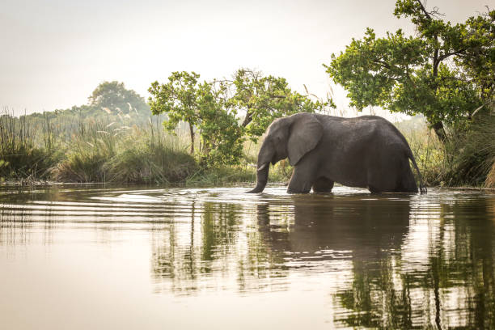

Most Popular
🐅 Jungle Safari Adventure
The thrill of spotting a tiger, elephant, deer, or exotic birds is an experience like no other. Explore dense forests and witness wildlife in their natural habitat.
- Jeep Safari (Perfect for small groups & flexible exploration)
- Canter Safari (Ideal for larger groups)
- Guided tours with experienced forest guides